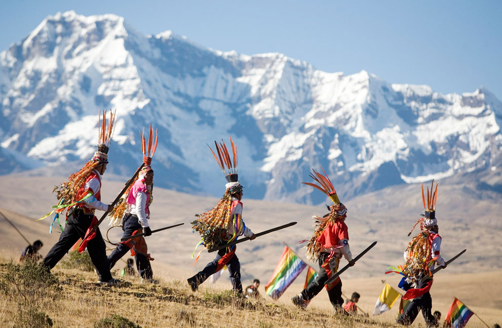
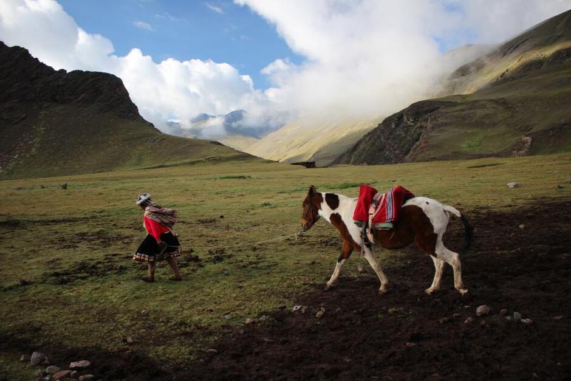
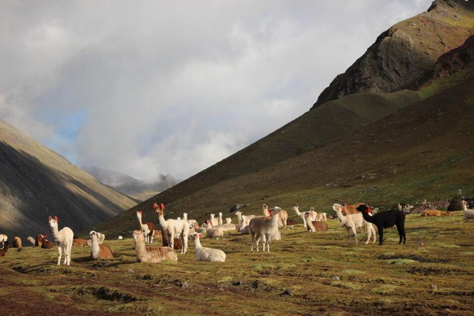

“Once upon a time, two brothers lived in Cusco: Salkantay and Ausangate. When there was a drought in Cuzco, they ventured to other lands to save their people. Salkantay went north. There the jungle, the forbidden love of a girl named Veronica and many problems were waiting for him. And the other brother, Ausangate, went south. There he discovered a fertile valley and was able to send potatoes, maize, llama and alpaca meat to Cuzco and thus saved the inhabitants of the city.”
This is the legend about the mountain brothers told by the Quechua Indians.

Highest mountain in Peru
Ausangate is the highest peak of the second longest and most glaciers mountain chain in Peru: the Cordillera Vilcanota, 120 km long. The Cordillera Vilcanota is located approximately 100 km southeast of Cusco. It is here, in these glaciers, that the great Vilcanota River originates, which then flows into the Amazon and carries water to the Atlantic Ocean.
At 6,384 meters above sea level, Ausangate is the fifth highest mountain in Peru (and one of the highest in Latin America), behind Huascaran, Yerupaja, Coropuna and Huandoy.
In the middle of the 20th century, several expeditions tried to conquer the peak of Ausangate.The first in 1950 was the Italian Piero Ghiglione. After an unsuccessful first attempt, he assembled a multinational expedition and returned in 1952. But this time too, the expedition failed to climb the main peak of Ausangate. Finally, in 1953, an Austro-German expedition was able to reach the top of Ausangate. And only 30 years later the first Peruvian expedition climbed that mountain for the first time!

Holiday Qoyur Rit'i
Ausangate is one of the main Apu: the patron gods of Cuzco. During the Inca Empire, the Indians worshiped this God and held a holiday in his honor. With the arrival of the Spanish colonialists, the tradition of celebrating remained, but was mixed with the Christian holiday of the Holy Trinity.
Qoyur Rit'i is celebrated in late May - early June and is celebrated for several days. In the Quechu language, Qoyllur Rit'i means “brilliant, shining white snow.” The festival takes place in the Temple at the foot of the Ausangate glacier. During this period, pilgrims come here not only from surrounding villages, but also from all over the country and even from neighboring states. A comic fair is taking place near the Temple. People dressed in national costumes dance traditional dances. But the main action of Koyyur Riti does not take place here.
A group of Indians in traditional costumes for their community goes to the top of Ausangate. Foreigners are strictly prohibited from taking part in this - it is believed that this will offend Apu Ausangate. For several days, pilgrims go to the top: they make their way along dangerous paths, freeze at rest stops, suffocate in thin air, and overcome many difficulties along the way. Quite often accidents occur - it happens that not everyone is destined to return back (in this case they say that Apu Ausangate received his victim). All this is done for the main purpose of the pilgrimage: to bring a piece of snow from the glacier to the Temple. People believe that this ice brings good luck and heals illnesses, and if you irrigate the earth with melted ice, it will be generously fertile.

Climbing Ausangate
Climbing Ausangate is definitely not a route for beginners! If you consider yourself experienced enough for such a climb, spend enough time in Cusco before starting the trek to acclimatize.
How to get to Ausangate
Route 1: Take an intercity bus to the village of Chillca. From here, in 4-5 hours you can walk to Campo Base - the beginning of the climb to the glacier.
2nd way: Take a bus to the village of Tinqui, from here get to Pacchanta, and then walk for 8-10 hours through the Acero gorge to Base del Ausangate - the best point the beginning of the climb, according to many climbers.
If you are not experienced enough to hike on your own, you can explore Ausangate and its magnificent surroundings in the company of experienced guides.